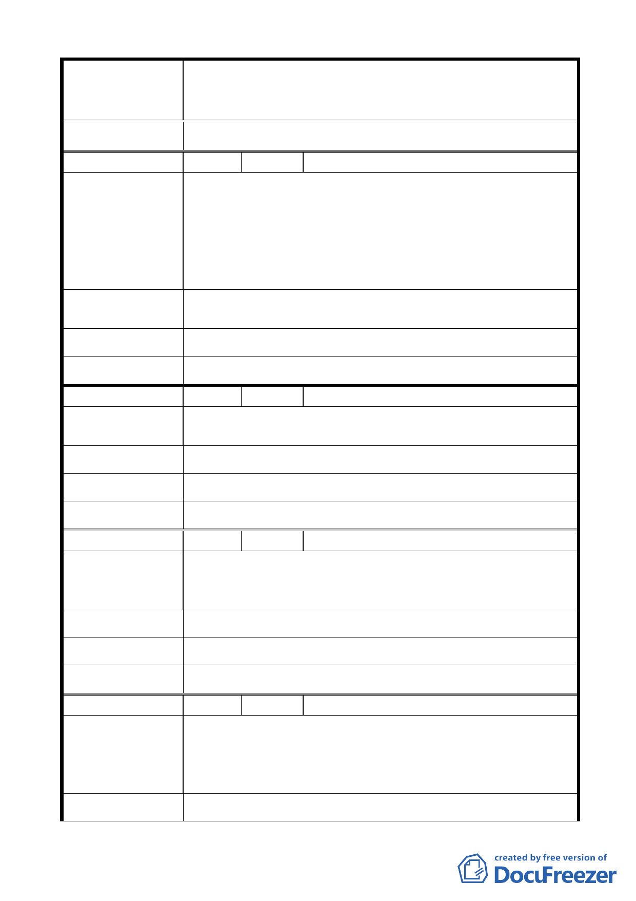

變更臺北市中山區北安段三小段 297-1 地號等20 筆高職
案 名 用地為機關用地（供國防部國防專區使用）及抽水站用地主
要計畫案
大 會 決 議 同編號 5 決議。
編 號 9 陳情人 梁濬明
本區 400 巷住戶多為早年隨政府來台，服務軍旅之榮民，部
分住戶於 2 年前已獲配售國宅搬遷，唯少數於外語學校退
役，居住現址達 5.60 年之榮民，現今面臨無屋可住之困境。
陳 情 理 由 同為功在國家之榮民，卻有天壤之命運，盼國防部、臺北市
政府能本馬總統/市長一貫之「先安置後拆遷」原則，照顧
現住戶。
本區佔地廣大，若能同時用少許土地興建一、二棟大樓安置
建 議 辦 法 現有住戶，相信能共創雙贏之局面。
市 府 回 覆 意 見 同編號 5（三）市府回應說明。
大 會 決 議 同編號 5 決議。
編 號 10 陳情人 潘文加
大直地區原已有抽水站，且有員山子分洪來調節基隆河、大
陳 情 理 由 直地區，積水現象大幅降低，實無建立之必要性。
建 議 辦 法 不需建立抽水站將本地區納入國防專區一並計畫。
市 府 回 覆 意 見 同編號 5（二）市府回應說明。
大 會 決 議 同編號 5 決議。
編 號 11 陳情人 陳韻好
基隆河整治已有員山子分洪，且已有大直抽水站設立，對大
陳 情 理 由 直地區積水已有足夠之保障，在此設置抽水站必要性是很
低、不實在的、不需要的。
建 議 辦 法 不建立抽水站，將抽水站區域併入國防專區一併開發。
市 府 回 覆 意 見 同編號 5（二）市府回應說明。
大 會 決 議 同編號 5 決議。
編 號 12 陳情人 王鎮淮
1. 大直抽水站抽水量不足造成淹水，是否是現有抽水機組
老舊或是排水溝被堵塞。
陳 情 理 由 2. 國防專區使用造成現有的住戶（居民）困擾。
3. 臺北市寸土寸金真的有必要再蓋抽水站嗎?
建 議 辦 法 1. 現有的抽水站功能改善，機組汰舊換新，疏通水溝的淤
- 12 -